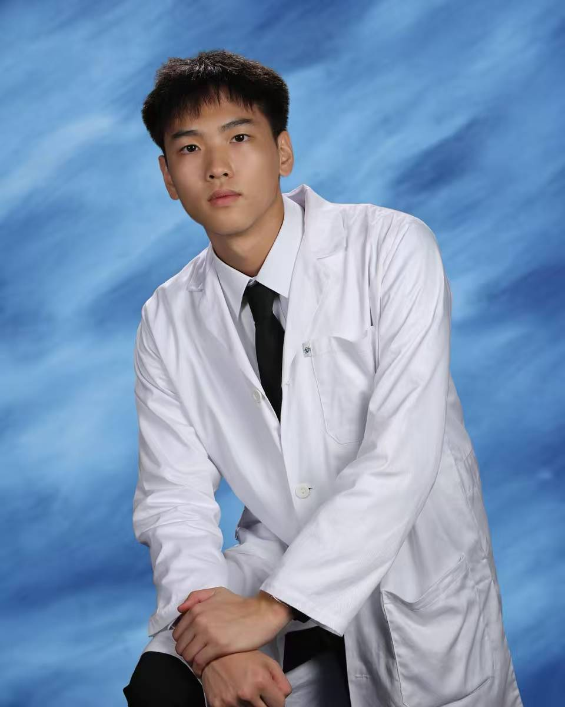
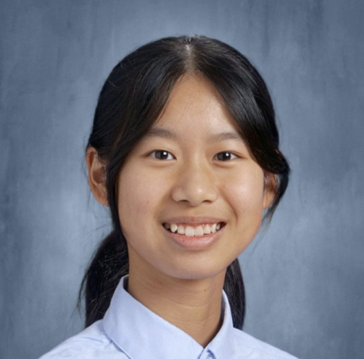
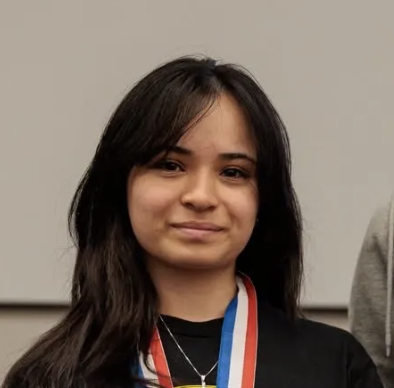

Central management
The Board
The board is the central management of the lab and all its activities.
Board HeadCharlie Cao Founder
Board MembersOmer Eksi
Carson Burnside Wheeler
Carson Burnside Wheeler
2026–27 Organization
Meet our board, academic leadership, school staff, alumni, and student research teams.
Central management
The board is the central management of the lab and all its activities.
Club / Academic Team Management
These leaders manage the upkeep of club operations and their respective academic areas.

Charlie is a senior at Fulton Science Academy. His current research includes experimenting with iPSC-derived neuron models in MEA platforms and studying neuron synaptogenesis mechanisms. His interests include software-automated testing and experimentation to investigate the limits of brain-on-chip model capabilities, with the long-term goal of supporting in vivo brain organoid brain-on-chip research.

Mukund is a senior at Fulton Science Academy. His interests include game development, astrophotography, and model rocketry. He is currently working on bridging software with biological wetware research. More specifically, changing neuron deep neural training from traditional methods to more novel platforms in order to better communicate the game world environments to help neurons achieve complex goals.

Nina is a junior at Fulton Science Academy. Her interests include electrical engineering and computer science. She is currently researching optimization of machine learning models, integration with embedded systems, and autonomous robotics.

Alana Ulmer is a junior at Fulton Science Academy. She is interested in chemical and materials engineering. Her current research surrounds the optimization of OHTLs in perovskite solar cells, particularly through the application of self-assembled monolayers. She also enjoys cooking, photography, and hiking.

Sulayman is a senior at Troy High School in Michigan. His interests include biomedical engineering, dermatology and epidemiology research, and documenting his creative journey online. His current research explores robotics in life science settings, including autonomous lab robotics, hygiene cobot design, and drug-discovery workflows.

Keyi is a senior at Lynbrook High School. Her interests include biology and computer science/engineering. She is currently researching agentic AI systems, specifically how autonomous agents can use reasoning, memory, and tool use to solve complex programming and robotics tasks.
Zitian Chen is a junior at Edina Highschool in Minnesota. Her interests include economics, political science, and philosophy, with research in AGI ethics and urban planning in Minneapolis.
School Staff
Alumni Board
Advanced research
Will investigate biology research directed by the PI or individuals. This is the final step in the Biology lab program. Will use the bulk of the equipment in the lab for specialized research.
Read a preliminary educational summary. (Given at request)
Skills and education
Will focus on educating students on lab skills so they may continue to do lab work in the iGEM team or in a research-focused team.
Curriculum is based on the four areas of relevant biological sciences.
Based on current FSA Lab research, students will become knowledgeable about their area and will aim to contribute to ongoing FSA biology research.
Synthetic biology competition
Will do research to participate in the iGEM competition. This is a biotechnology research competition.
The iGEM Competition is an international synthetic biology competition where students create biological solutions to real-world problems. Teams design, build, and test genetically engineered systems to address challenges in areas such as healthcare, agriculture, and the environment. They also consider the ethical, social, and safety impacts of their projects while documenting and presenting their work.
Visit iGEM.org →